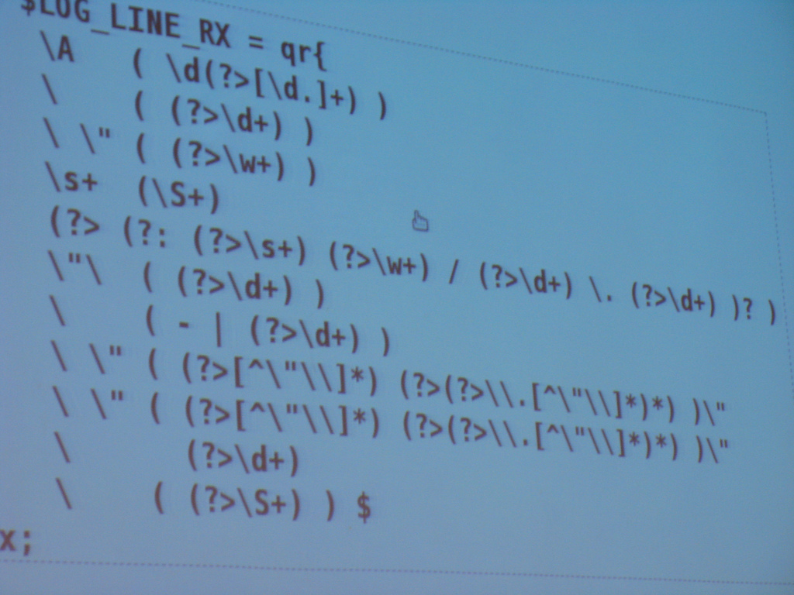

Денис Рубцов, Денис Виневцев Rotapost.Ru
что это?!
JQuery - Это JavaScript-фреймворк. Ничего страшного в этом слове нет. Можете считать, что это набор полезных функций, которые позволяют удобно делать то, что обычно требуется делать при помощи JavaScript.
Cелекторы jQuery используются для выбора элементов на странице, чтобы затем вызвать методы jQuery для манипулирования ими.
Основные селекторы
| Селектор | Описание | Пример |
|---|---|---|
| Все | Выбирает все элементы на странице, включая head, body и так далее. |
$("*") |
| Элемент | Выбирает все элементы с заданным тегом. | $("p")$("div") |
| Класс | Выбирает все элементы с заданным именем класса. | $(".myClass")$("p.myClass") |
| ID | Выбирает один элемент с заданным атрибутом id. |
$("#myID")$("p.#myID") |
Иногда нужно выбрать определенный элемент, у которого нет класса или ID, и нет возможности просто добавить класс или ID к данному элементу в разметке. Такая ситуация может сложиться при использовании CMS с фиксированным шаблоном HTML или при работе с контентом, созданным пользователем.
| Селектор | Описание | Пример |
|---|---|---|
| Атрибут | Выбирает элемент(ы), которые содержат определенный атрибут вне зависимости от значения атрибута. | $("div[attributeName]") |
| Атрибут равен | Выбирает элемент(ы), которые содержат заданный атрибут с заданным значением. | $("div[attributeName='value']") |
| Атрибут не равен | Выбирает элемент(ы), которые не содержат заданного атрибута или сожержат заданный атрибут, но его значение не соответствует заданному. | $("div[attributeName!='value']") |
| Атрибут начинается с | Выбирает элемент(ы), которые содержат заданный атрибут, у которого значение начинается с заданной строки. | $("div[attributeName^='value']") |
| Атрибут заканчивается |
Выбирает элемент(ы), которые содержат атрибут, у которого значение заканчивается заданной строкой. | $("div[attributeName$='value']") |
| Атрибут содержит | Выбирает элемент(ы), который содержит атрибут, у которого значение содержит заданную строку. | $("div[attributeName*='value']") |
| Атрибут содержит слово | Выбирает элемент(ы), который содержит атрибут, у которого значение содержит заданное слово. "Слово" - это последовательность символов без пробелов. | $("div[attributeName~='value']") |
| Атрибут содержит префикс | Выбирает элемент(ы), который содержит атрибут, у которого значение либо равно заданной строке, либо начинается с заданной строки с последующим дефисом. | $("div[attributeName|='value']") |
Если нет возможности сузить область выбора по основным селекторам и по атрибутам, то можно "покопаться" в содержании элемента для определения, подходит он для выбора или нет. jQuery имеет 4 селектора для данного назначения:
| Селектор | Описание | Пример |
|---|---|---|
:contains() |
Выбирает элемент(ы), которые содержат заданный текст. Текст может быть в самом элементе, так и в любом элементе внутри в выбранного элемента. Примечание: :contains() чувствительно к регистру - "Hello" не соответствует "hello". |
// Выбираем все div, которые содержат "myText": |
:has() |
Выбирает элемент(ы), которые содержат 1 или более элементов, соответствующих заданной строке. Селектор просматривает на соответствие все элементы внутри заданного элемента. | // Выбираем все div, которые содержат параграфы: |
:parent |
Выбирает элемент(ы), которые содержат другие элементы или текстовые узлы. | // Выбираем все div, которые содержат что-нибудь: |
:empty |
Выбирает элемент(ы), которые не содержат других элементов или текстовых узлов. | // Выбираем все div, которые не содержат ничего: |
Другой способ выбрать элементы в jQuery - это рассмотреть, как они соотносятся друг к другу на странице. Вероятно, вы знаете много таких селекторов по работе с CSS:
| Селектор | Описание | Пример |
|---|---|---|
| Ребенок | Выбирает элемент(ы), которые являются ребенком (прямым потомком) заданного предка(ов). | // Выбираем все элементы списка с классом "highlight", которые являются ребёнком для списка с ID "nav": |
| Потомок | Выбирает элемент(ы), которые являются потомками (детьми, внуками и так далее) заданного предка(ов). Это более общая форма селектора Ребенок. | // Выбираем все ссылки внутри списка с ID "nav": |
| Следующий соседний элемент |
Выбирает элемент(ы), который следует непосредственно за заданным элементом, где оба элемента имеют одного и того же родителя. | // Выбираем все параграфы, которые следуют непосредственно за заголовком H1: |
| Следующий сестринский элемент |
Выбирает элемент(ы), который следует за другим элементом, где оба элемента являются потомками одного родителя. Это более обобщенная версия селектора следующий соседний элемент. | // Выбираем все ячейки таблицы после ячейки, которая содержит слово "Hello": |
| Первый ребенок | Выбирает элемент(ы), который является первым ребенком его родителя. | // Выбираем первые пункты во всех списках на странице: |
| Последний ребенок | Выбирает элемент(ы), который является последним ребенком его родителя. | // Выбираем последние пункты во всех списках на странице: |
| N-й ребенок | Выбирает элемент(ы), который является n-м ребенком его родителя (смотри примечание ниже). | // Выбираем третьи пункты во всех списках на странице: |
| Только ребенок | Выбирает элемент(ы), которые являются ребенком родителей, у которых есть только дети. | // Выбираем только элементы в списках с одним пунктом: |
Элементы формы имеют некоторые специфические свойства, которые вынуждают использовать некоторые трюки для их выбора. Например, чекбоксы, наряду со многими другими типами полей, являются элементами input. Таким образом,, чтобы выбрать чекбоксы в форме нужно использовать $("input[type='checkbox']").
Аналогично, идентификация выбранных элементов в списке select или отмеченных чекбоксов в форме может быть утомительным занятием./
К счастью, jQuery обеспечивает несколько специфических для форм селекторов, которые облегчают жизнь:
| Селектор | Описание | Пример |
|---|---|---|
:button |
Выбирает все кнопки формы. | $("input:button") |
:checkbox |
Выбирает все чекбоксы. | $("input:checkbox") |
:file |
Выбирает все поля загрузки фала. | $("input:file") |
:enabled |
Выбирает все Доступные поля формы. | $("input:enabled") |
Иногда нужно выбрать элемент, про который известно, что он расположен в наборе ранее выбранных элементов. Например, нужно выделить первый параграф, который имеет класс "myClass". Для усложнения примера допустим, что нужно выбрать все пункты в списке, который имеет класс "myClass", а затем выбрать 5-й пункт из получившегося набора.
jQuery имеет семь селекторов, которые можно использовать для ограничения области поиска на основе позиции элемента:
| Селектор | Описание | Примеры |
|---|---|---|
:first |
Выбирает первый элемент в наборе отобранных элементов. | // Выбираем первый параграф, который имеет класс "myClass": |
:last |
Выбирает последний элемент в наборе отобранных элементов. | // Выбираем последний параграф, который имеет класс "myClass": |
:eq() |
Выбирает единственный элемент в наборе отобранных элементов. Выбор элемента осуществляется по последовательному номеру индекса (0 = первый элемент, 1 = второй и так далее). |
// Выбираем з-й параграф, который имеет класс "myClass": |
:lt() |
Выбирает элементы в наборе отобранных элементов, которые расположены перед элементом с заданным индексом. Например, если задан индекс 2 (то есть 3-й элемент), то будут выбраны первые 2 элемента (с индексами 0 и 1). |
// /Выбираем первые 2 параграфа, которые имеют класс "myClass": |
:gt() |
Выбираем элементы в наборе отобранных элементов, которые расположены после элемента с заданным индексом. Например, если задан индекс 2 (то есть 3-й элемент), то будут выбраны все элементы после третьего. | // Выбираем все параграфы, которые имеют класс "myClass", за исключением первых трех: |
:even |
Выбирает все элементы с четными индексами в наборе отобранных элементов. Заметьте, что индексы начинаются с 0, таким образом в действительности отбираются 1-й, 3-й и так далее элементы. | // Выбираем 1й, 3й, 5й, и так далее параграфы, которые имеют класс "myClass": |
:odd |
Выбирает все элементы с нечетными индексами в наборе уже отобранных элементов. Заметьте, что индексы начинаются с 0, таким образом в действительности отбираются 2-й, 4-й и так далее элементы | // Выбираем 2й, 4й, 6й, и так далее параграфы, которые имеют класс "myClass": |
Возможность управлять значениями атрибутов элементов объектной модели доку-мента позволяет изменять визуальное представление этих элементов, заменять зна-чения элементов форм программным способом, управлять их состоянием и т. п.
Варианты работы функции attr() в зависимости от переданных ей параметров:
Варианты работы функции attr() в зависимости от переданных ей параметров:| Описание | Параметры |
|---|---|
| attr ( name ) - получает значение заданного атрибута соответствующего элемента набора jQuery, либо первого элемента в наборе jQuery (если их несколько). Возвращает значение undefined, если у элемента указанный атрибут отсутствует или в наборе нет элементов. | name – (строка) Имя атрибута, значение которого необходимо получить. |
| attr ( name, value ) - присваивает атрибуту name значение value для всех элементов набора jQuery. | name – (строка) Имя атрибута, которому необходимо присвоить значение. value – (строка | массив) Значение присваиваемое атрибуту или выражение JavaScript, вычисленное значение которого (возможно даже массив) присваивается атрибуту. |
| attr ( object ) - устанавливает значение атрибута... | object – (объект) Объект, свойства которого становятся значениями атрибутов всех элементов в наборе jQuery. Если значением какого-либо свойства объекта является функция, то данная функция вызывается индивидуально для каждого отдельного элемента в наборе, а возвращаемое ею значение становится значением атрибута. |
| attr ( name, function() ) - устанавливает значение атрибутаполученные в виде пар ключ:'значение' объекта object | name – (строка) Имя атрибута, которому необходимо присвоить значение. function( [index, attr] ) – (функция) Ссылка на функцию, которая вызывается индивидуально для каждого отдельного элемента в наборе, а возвращаемое ею значение становится значением атрибута. С первым параметром index ей передается индекс текущего элемента в наборе (начиная с 0), а втором аргументе attr - старое значение атрибута. Внутри функции контекст this ссылается на текущий элемент. |